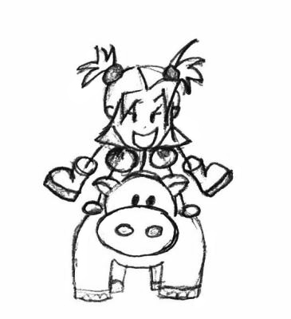

Nouvelle écrite pour le concours de nouvelles de l'Insatiable
Thème : placer la phrase "C'est une défaite victorieuse"
Classement : deuxième
Février 2016
« La périlleuse sécurité. » glanait-il, du haut de son mètre cinquante-deux.
Et comme chaque soir, Cécile attrapait la main de sa fille et la trainait dans l'appartement. Elle claquait la porte. Un bruit sourd. Refus de communication pur. Puis on entendait la voix faible du vieillard - d'autant plus faible qu'elle était étouffée par l'épaisseur exagérée de la porte d'entrée - prêcher : « Vous ne comprenez pas, vous ! C'est toujours la même victoire défectueuse ! »
Et Cécile de soupirer. Elle aurait donné beaucoup pour changer de voisin. Virer ce clochard boiteux, qui occupait davantage le couloir que son propre logement. Une de ses théories était qu'il n'avait pas le courage de le nettoyer et qu'il investissait maintenant dans le couloir pour ne pas mourir étouffé par sa propre crasse. Ou il élevait peut-être un animal sauvage à l'intérieur. On pouvait tout imaginer.
Diane lâcha la main de sa mère, puis se précipita dans la cuisine pour attendre son goûter. Le verre de lait traditionnel. Il y avait toujours eu cet ordre dans les choses : la fin des cours, le chemin vers l'appartement - peu compliqué, trois rues à longer -, la montée des escaliers, la prophétie du voisin et le goûter lacté. Il n'avait pas fallu plus de douze ans pour conditionner la pauvre petite fille aux boucles dorées.
Diane avait bien sûr posé des questions au début. Qui est cet homme ? Que signifient ses phrases ? Pourquoi n'est-il pas chez lui ? Mais sa mère ne voulait pas savoir. Elle voulait juste fuir cet homme anormal et ses expressions dénuées de sens. Alors on rentrait chez soi, on claquait la porte, et on oubliait sa présence jusqu'au lendemain.
« Vous pensez vraiment y échapper ? À votre guerre apaisante ? À votre victoire défectueuse ? »
Et le rituel repartait le matin suivant. Cécile attrapait la main de sa fille et prenait soin d'ignorer le vieil homme, une nouvelle fois. On faisait semblant de ne pas le voir, on évitait le dialogue. C'était la carapace protectrice contre l'étrangeté. Les deux tortues, terrifiées par le potentiel virus qui se propagerait en elles si elles avaient le malheur d'échanger une parole avec cet homme déboussolé. Oui, la folie est contagieuse, monsieur.
« Et la folie, elle est de quelle côté ? », semblaient répondre les yeux perçants du vieil homme à la fuite perpétuelle de ses deux voisines.
La course infernale de Diane et sa génitrice continua jusqu'à l'école primaire, trois rues plus loin. Au moment des aux revoir habituels, le téléphone de Cécile sonna, attirant l'attention des quelques autres parents présents. Elle répondit, machinalement, sans pour autant lâcher la main de sa charmante petite aux boucles blondes et aux joues rosies par le froid de l'hiver. Une voix grésillante parvenait jusqu'aux oreilles des curieux voisins, entrecoupées des approbations régulières de Cécile. Oui, oui, bien sûr. Ça ne peut pas attendre ? Oh oui, oui, bien sûr.
Lorsque le défilé de hochements de tête fut enfin terminé, elle se tourna vers sa fille, le regard inquiet. Diane détestait cette expression - celle de l'employé de banque, pressée par le temps comme par ses supérieurs, pas celle de sa mère.
« Je rentrerai tard ce soir, ma bichette, tu penses que tu pourrais rentrer seule ? »
En posant cette question rhétorique, son sourire s'était crispé – symbole muet des excuses non prononcées. Elle n'avait rien trouvé de plus humain à dire. Une grimace. Tout au plus ce qui se présentait devant la petite fille à cet instant.
Diane acquiesça pourtant, en réponse à ce faux choix qu'on lui avait tendu sur un magnifique plateau doré, imitation métal. Avec un sourire pour se moquer quelque peu de la grimace de sa mère. Dans tes dents. Cours à ton travail, tu as bien raison. Un bisou sur chaque joue, un signe de main en quittant la cours de récré, et on ferait semblant qu'il ne s'est rien passé. Simple. Si simple.
L'heure de la sortie des classes arriva vite. Diane attrapa son petit sac à dos, le fit grimper sur ses épaules, et prit son air renfrogné des grands jours. Elle connaissait bien le chemin - aucun souci pour rentrer. Mais elle n'appréciait pas que sa mère l'abandonner de la sorte.
Elle montait les escaliers en ruminant ces pensées négatives, lorsqu'elle entendit cette voix familière et repoussante à la fois.
« Victorieuse défaite encore aujour... Oh mais tu es seule ? »
Les paroles du vieillard pétrifièrent la petite. Elle n'osa plus avancer d'un pas.
« Que s'est-il passé ? », demanda-t-il, stupéfait.
La peur s'empara de Diane, comme un loup d'une brebis se promenant seule en pleine nuit.
« Rien, je... Ma mère travaille. », répondit Diane, tremblante.
Un sourire apaisé apparut alors sur la figure du vieil homme.
« - Qu'y a-t-il ? s'inquiéta la petite, face à cette réaction inattendue. - C'est la toute première fois que tu m'adresses la parole. Je suis content que nous puissions commencer cette relation de voisinage, après dix ans d'ignorance. »
Diane grimaça - elle n'avait pas envie d'entendre une série de reproches grinçants ce soir.
« Oh non, ne fais pas cette tête. C'est une bonne nouvelle ! Écoute-moi, j'aimerais que dans ton quotidien, tu ne sois plus effrayée par les autres, que tu oses parler aux gens. Comme tu l'as fait avec moi ce soir. »
Diane réfléchit un instant, n'étant pas bien sûre de comprendre les paroles énigmatiques de cet homme mystérieux. Elle se sentait personnage principal d'un vieux film de magie, où le sorcier entre en scène sous une lumière violette et dans un jet de fumée. Il lève sa baguette en prononçant des incantations tarabiscotées. Et on ne sait pas quel miracle se déroulera devant nos yeux ébahis.
« - Je ne comprends pas, articula la petite blonde. - Ne vis pas dans la peur des autres. Tends une main vers eux, ils ne te veulent sûrement que du bien. N'est étranger à toi que celui à qui tu refuses de parler. »
Ce qu'il disait semblait plus clair - et pas si dénué de sens, comme sa mère lui avait répété depuis toujours. Le vieillard fou. Un peu sage au fond, finalement. Ou Diane serait prête à le croire du moins.
« Si tu as compris ça, l'absence de ta mère aura été la plus belle défaite victorieuse qui m'ait été donné de voir. Bon voyage, Diane. »
Et il disparut derrière la porte de son appartement.